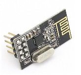

|  |
nrf24l01+ Library
|
This is the API for the PIC32 nrf24l01+ library. Here you will find documentation for all functions included in the library detailing their usage. To go right to a list of the functions, just click here! . Alternatively, try using the search box in the upper right corner to search for any thing you need. Also, be sure to check out the documentation in the "Useful References" section below for a complete writeup of the library and how to use it.
This library was created to simplify the use of the widely available nrf24l01+ radio module with the PIC32 microcontroller. It provides a relatively short set of functions that allow the user to take advantage of all the major functionality of the nrf24l01+ without needing to worry about the hardware of the radio.
Please refer to:
 1.8.11
1.8.11